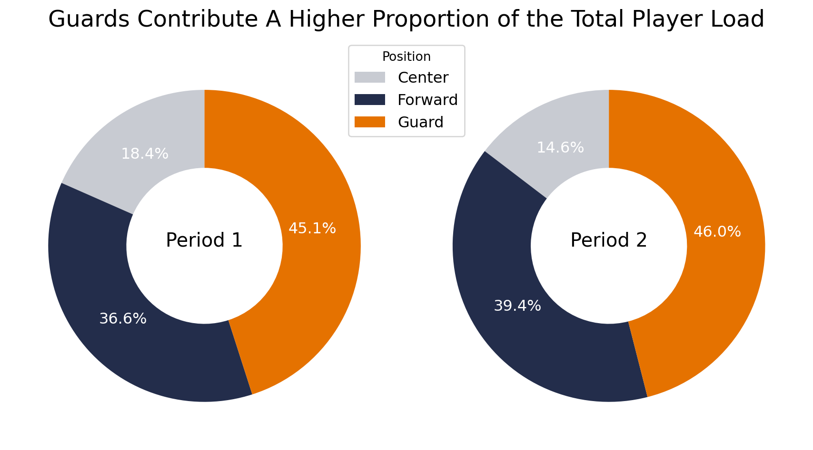
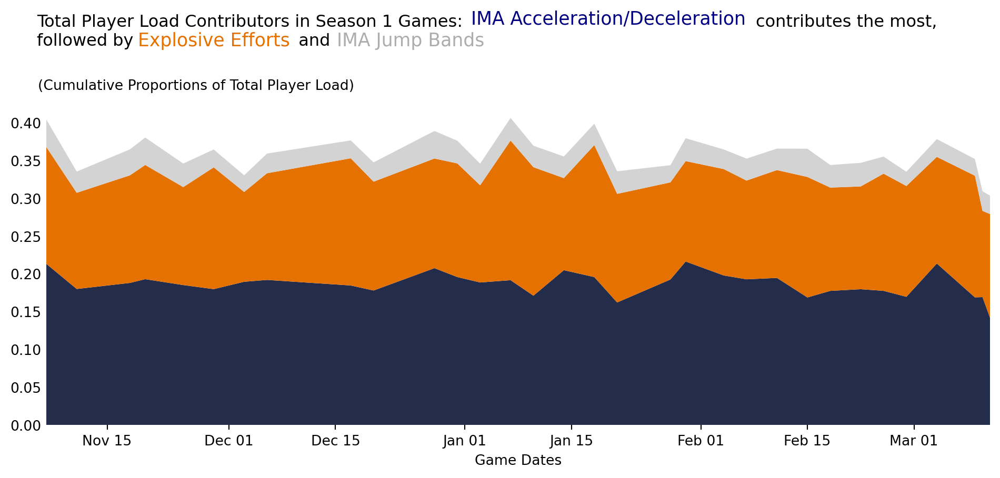
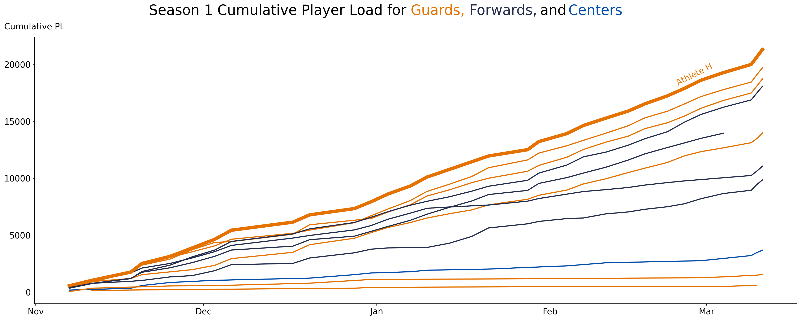

# Importing libraries
import pandas as pd
import matplotlib.pyplot as plt
import seaborn as sns
# Loading in cleaned data set
df1 = pd.read_csv("./season1_cleaned.csv")4 Data Visualization
4.1 Graph 1: Looking at the Percentages of Total Player Load separate by position, for each period
To get the data ready for our pie charts, we need to separate the one dataframe by Period to make new two dataframes: p1 and p2. For the two new dataframes, we wil use the groupby method to group the data by Position and then find the average of the Total Player Load for each position.
# Separate df1 into dataframes for period 1 and for period 2
p1 = df1[df1['Period'] == 'Period 1'].copy().reset_index(drop=True)
p2 = df1[df1['Period'] == 'Period 2'].copy().reset_index(drop=True)
# Take average of `Total Player Load` by `Position` for each period dataframe
# Grouping by `Position`, then taking the mean of `Total Player Load`, then resetting the index
p1_avg = p1.groupby(['Position'])['Total Player Load'].mean().reset_index()
p2_avg = p2.groupby(['Position'])['Total Player Load'].mean().reset_index()
# Print dataframes
print(p1_avg,"\n")
print(p2_avg) Position Total Player Load
0 Center 109.076500
1 Forward 216.843042
2 Guard 267.258140
Position Total Player Load
0 Center 88.344647
1 Forward 238.046535
2 Guard 278.306542Now3 that we have the averages, we will divide each position’s Total Player Load by the sum of all positions’ Total Player Load to get the percentage. This percentage will be stored in a new column, Proportion.
# Add a new column, Proportion, for each position's TPL for each period
p1_avg['Proportion'] = p1_avg['Total Player Load'] / p1_avg['Total Player Load'].sum()
p2_avg['Proportion'] = p2_avg['Total Player Load'] / p2_avg['Total Player Load'].sum()
# Print dataframes w/ new column
print(p1_avg, "\n")
print(p2_avg) Position Total Player Load Proportion
0 Center 109.076500 0.183885
1 Forward 216.843042 0.365562
2 Guard 267.258140 0.450553
Position Total Player Load Proportion
0 Center 88.344647 0.146097
1 Forward 238.046535 0.393662
2 Guard 278.306542 0.460241To plot our donut charts, we will use the plot.pie method. Using subplots, we can create two donut charts side by side to demonstrate the percentages of Total Player Load for each position in each period.
# Make color dict for positions
colors = {'Guard': '#E57200', 'Forward': '#232D4B', 'Center': '#C8CBD2'}
# Make subplots, 1 row and 2 columns
fig, ax = plt.subplots(1, 2, figsize=(9, 5))
# Graphing Period 1 as ax[0], aka first subplot
# the wedgeprops argument is used to give the hole in the center, the autopct argument is used to display the percentages, the pctdistance argument is used to change the distance of the percentage text
# the textprops argument is used to change the font color and size, the startangle argument is used to rotate the chart, and the colors argument is used to change the colors of the wedges based on the position
ax[0].pie(p1_avg['Proportion'], labels=None, wedgeprops=dict(width=0.5), autopct='%1.1f%%', pctdistance=0.7, textprops={'color': 'white', 'fontsize': '12'}, startangle=90, colors=[colors[pos] for pos in p1_avg['Position']])
# the annotate argument is used to add text to the center of the donut chart
ax[0].annotate('Period 1', xy=(0, 0), fontsize=15, ha='center')
# Graphing Period 2 as ax[1], aka the second subplot
# the arguments are the same as above, but with data from p2_avg
ax[1].pie(p2_avg['Proportion'], labels=None, wedgeprops=dict(width=0.5), autopct='%1.1f%%', pctdistance=0.7, textprops={'color': 'white', 'fontsize': '12'}, startangle=90, colors=[colors[pos] for pos in p2_avg['Position']])
ax[1].annotate('Period 2', xy=(0, 0), fontsize=15, ha='center')
# Adding a title
fig.suptitle('Guards Contribute A Higher Proportion of the Total Player Load', fontsize=18)
# Adding a legend, and setting the location, font size, and position
fig.legend(p1_avg['Position'], loc='center', bbox_to_anchor=(0.5, 0.8), title='Position', fontsize=12)
# Making a tight layout and displaying the plot
plt.tight_layout()
plt.show()
4.2 Graph 2: Looking at different Contributors to Player Load for a specific athlete.
In this STACKED AREA GRAPH, Explosive efforts, IMA Accel/Decel, and IMA Jump Band (Med, High, Low) were observed as contributors to Total Player Load. The data will be filtered for that of Athlete H in column About. Here, the
# Importing libraries for graph 2
from sklearn.preprocessing import StandardScaler
import matplotlib.dates as mdates
from matplotlib.patches import PatchThere must be setup in logistics like turning Date string from the dataset into a datetime structure and filtering the data just for that of Athlete H:
# Obtain `Date` from df1 and turn into datetime object through pandas
df1['Date'] = pd.to_datetime(df1['Date'], format='%m/%d/%y')
# Not wanting to work straight on df1, I will create a copy of df1 to manipulate for this graph:
df1_copy = df1.copy()
# sort for just Athlete H (athlete in Season 1 with highest incline in player load)
df1_copy = df1_copy[df1_copy['About'] == 'Athlete H']The three variables that will be looked at are the ones in the season1 dataset that relate to total player load. For this purpose, 3 variables will be chosen/combined in a meaningful way for the graph. Here they are:
IATS_IDTS_pct=IMA Accel TotalandIMA Decel TotalaveragedJumps_pct=IMA Jump Count Low Band,IMA Jump Count Med Band,IMA Jump Count High BandaveragedEES_pct=Explosive Efforts
To find the proportions, all 3 main variables will be divided by the Total Player Load at the matching dates.
The next code block will find the proportion that each value takes of total player load.
# Avg_IATS_IDTS_By_Date is the average of the IMA Accel/Decel total. Having both independently on the graph causes busy-ness
# They're similar in correlation to total player load (found through EDA)
df1_copy['Avg_IATS_IDTS_By_Date'] = (
df1_copy['IMA Accel Total'] +
df1_copy['IMA Decel Total']
) / 2
df1_copy['IATS_IDTS_pct'] = df1_copy['Avg_IATS_IDTS_By_Date'] / df1_copy['Total Player Load']
# Avg_ijclb_ijcmb_ijchb_By_Date is the average of the IMA jump bands from low, medium, and high. Having all independently on the graph causes busy-ness
# They're similar in correlation to total player load (found through EDA)
df1_copy['Avg_ijclb_ijcmb_ijchb_By_Date'] = (
df1_copy['IMA Jump Count Low Band'] +
df1_copy['IMA Jump Count Med Band'] +
df1_copy['IMA Jump Count High Band']
) / 3
df1_copy['Jumps_pct'] = df1_copy['Avg_ijclb_ijcmb_ijchb_By_Date'] / df1_copy['Total Player Load']
# Explosive Efforts can remain independent since there's only one "version"
df1_copy['EES_pct'] = df1_copy['Explosive Efforts'] / df1_copy['Total Player Load']The code will group the 3 new columns by the Date they were recorded and averaged for graphical purposes. In addition, colors will be mapped to each column along with sorting the game dates in order for visual clarity purposes.
# Take the mean of the `IATS_IDTS_pct`, `EES`, and `Jumps_pct` according to the specific game date
avg_df = df1_copy.groupby('Date')[[ 'IATS_IDTS_pct', 'EES_pct', 'Jumps_pct']].mean().reset_index()
avg_df.columns = ['Date', 'IATS_IDTS', 'EES', 'Jumps']
# Colors mapped to each of the 3 variables for the graph
col_map = {
'IATS_IDTS': '#232D4B', # UVA blue - `IATS_IDTS_pct`
'EES': '#E57200', # UVA orange - `EES`
'Jumps': '#D3D3D3' # gray - `Jumps_pct`
}
# Sort game dates in order (first game on November 7 to last game on March 14) - aids in graphs that look continuous and not chaotic (unexplainable visuals can happen in the graph without this line btw)
avg_df = avg_df.sort_values('Date')The actual plot: This next part creates a STACKED AREA GRAPH of all 3 variables, starting with IATS_IDTS, followed by EES and Jumps. Coincidentally, this is the order highest to lowest of which variable “contributes” to the Total Player Load.
# Creating "wide" graph to account for many dates across the season
plt.figure(figsize=(10, 5))
# Actual graphing - STACKED AREA GRAPH of:
# X-Axis: Game Dates under `Date`
# Y-Axis: Cumulative proportion of each variable: `IATS_IDTS`, `EES`, and `Jumps` (mapped to their colors)
plt.stackplot(
avg_df['Date'],
avg_df['IATS_IDTS'],
avg_df['EES'],
avg_df['Jumps'],
colors=list(col_map.values()), # Use color map from earlier
alpha=1 # make all colors solid, nothing less
)
# Remove axes (lines become distracting if not to the human eye)
plt.gca().spines['top'].set_visible(False)
plt.gca().spines['right'].set_visible(False)
plt.gca().spines['left'].set_visible(False)
plt.gca().spines['bottom'].set_visible(False)
# Take away the little horizontal tick lines beside the y-axis values
plt.tick_params(axis='y', length=0)
########################################################################################################################################################################
# This next section is optional. Currently, none of the code contributes to the current graph due to the current graph not using a legend. Instead, we put the variables by color in the title. You may uncomment the legend block below to use, however.
handles = [ # Matches colors as they are shown top-bottom in the graph itself into the legend's top-down order
Patch(facecolor='#D3D3D3'), # Top layer in graph (Jumps)
Patch(facecolor='#E57200'), # Middle layer (EES)
Patch(facecolor='#232D4B'), # Bottom layer (IATS_IDTS)
]
# Labels for the variables in the legend (see below legend code comments for what things to do with the legend and this list)
labels = [
'IMA Jump Band Counts',
'Explosive Efforts',
'IMA Accels & Decels'
]
# One can use a legend to list the colors from the map to each variable, but we've labeled them in the title.
# Uncomment out if you'd like the legend instead of the title color indicators
# plt.legend(
# handles=handles,
# labels=labels,
# loc="upper right",
# bbox_to_anchor=(1, 1.2),
# frameon=False,
# fontsize=8
# )
########################################################################################################################################################################
# The next codeblock inserts the X-axis label, Y-axis label, and title (with inserted words in respective color to act as the legend).
# To replace the legend: place the variable English names of:
# - IMA Acceleration/Deceleration: `IATS_IDTS`
# - Explosive Efforts: `EES`
# - IMA Jump Bands: `Jumps`
# into the title (more code below)
plt.text(0.45, 1.243, 'IMA Acceleration/Deceleration', transform=plt.gca().transAxes, fontsize=13, color='#000080')
plt.text(0.097, 1.175, 'Explosive Efforts', transform=plt.gca().transAxes, fontsize=13, color='#E57200')
plt.text(0.308, 1.175, 'IMA Jump Bands', transform=plt.gca().transAxes, fontsize=13, color='#adadad')
# X-axis, Y-axis, and title labels coded in that order:
plt.xlabel('Game Dates')
plt.text(-0.009, 1.04, "(Cumulative Proportions of Total Player Load)", transform=plt.gca().transAxes)
plt.title("Total Player Load Contributors in Season 1 Games: contributes the most,\nfollowed by and ", x=-0.01, y=1.15, loc='left')
# There are some issues with displaying the X-axis dates, so we formatted them as "month day", with an example below. Then we start the dates at Nov 7 until Mar 14 without putting Nov 1 or Mar 15 as the start and end X-axis numbers. Now we have the whole graph!
# X-axis logistics: formatting dates by "month day", ex: "Nov 15"
plt.gca().xaxis.set_major_locator(mdates.DayLocator(interval=1))
plt.gca().xaxis.set_major_formatter(mdates.DateFormatter('%b %d'))
plt.gca().xaxis.set_major_locator(mdates.AutoDateLocator())
# don't want floating dates before or after the first game date or last game date.
# Just limit to what is the first and last game date (Nov 7 to Mar 14, but don't list these)
plt.xlim(avg_df['Date'].min(), avg_df['Date'].max())
# Finally: Show the whole graph!
plt.tight_layout()
plt.show()
4.3 Graph 3: Looking at Cumulative Player Load over the course of the season by positon, highlighting player H.
This graph works to show how player load progressives over the season, with guards(especially Athlete H) dominating cumulative player load during the season.
# No imports are needed as they are loaded above
# Groups the data by date, about, and position, then it sums the total player load by each date and player
gamesums1 = df1.groupby(['Date', 'About', 'Position'])['Total Player Load'].sum().reset_index()
# Creates new DataFrame with desired columns
PL_per_player_df1 = gamesums1[['Date', 'About', 'Position', 'Total Player Load']].copy()
# Rename columns for clarity
PL_per_player_df1.rename(columns={'About': 'Player'}, inplace=True)
# Converts the date to represent datetime format
PL_per_player_df1['Date'] = pd.to_datetime(PL_per_player_df1['Date'])
# Sorts by date
PL_per_player_df1.sort_values(by='Date', inplace=True)
PL_per_player_df1.reset_index(drop=True, inplace=True)
# Creating color assignments to differentiate each position
colors = {
'Forward': '#232D4B',
'Guard': '#E57200',
'Center': '#024CAA'
}
# Setting a figure size for the graph
plt.figure(figsize=(20, 8))
#Loops through each unique player and appends their information to a new data set, in order of the game date, including the athlete letter, position, and cumulative sum
for player in PL_per_player_df1['Player'].unique():
player_data1 = PL_per_player_df1[PL_per_player_df1['Player'] == player].copy()
player_data1.sort_values('Date', inplace = True)
player_data1['Cumulative Load'] = player_data1['Total Player Load'].cumsum()
position = player_data1['Position'].iloc[0]
color = colors.get(position, 'gray')
linewidth = 6 if player == 'Athlete H' else 2
sns.lineplot(x=player_data1['Date'], y=player_data1['Cumulative Load'], color = color, linewidth=linewidth)
#Adding text to the graph, removing the x axis label for clearer results, adding the y axis label to the left upper corner
plt.text(0.15, 1.1, 'Season 1 Cumulative Player Load for', fontsize=25, ha='left', va='center', transform=plt.gca().transAxes, color='#000000')
plt.text(0.84, .82, 'Athlete H', fontsize=15, transform=plt.gca().transAxes, color='#E57200', rotation = 27)
plt.text(0.493, 1.1, 'Guards,', fontsize=25, ha='left', va='center', transform=plt.gca().transAxes, color='#E57200')
plt.text(0.57, 1.1, 'Forwards,', fontsize=25, ha='left', va='center', transform=plt.gca().transAxes, color='#232D4B')
plt.text(0.663, 1.1, 'and', fontsize=25, ha='left', va='center', transform=plt.gca().transAxes, color='#000000')
plt.text(0.7, 1.1, 'Centers', fontsize=25, ha='left', va='center', transform=plt.gca().transAxes, color='#024CAA')
plt.text(-0.04, 1.04, 'Cumulative PL', fontsize=15, ha='left', va='center', transform=plt.gca().transAxes, color='#000000')
plt.xlabel('')
plt.ylabel('')
#Adds major tick marks for each month
plt.gca().xaxis.set_major_locator(mdates.MonthLocator())
plt.gca().xaxis.set_major_formatter(mdates.DateFormatter('%b'))
#Sets x and y tick labels to a certain font size
plt.xticks(fontsize=15)
plt.yticks(fontsize=15)
#Removes the top and right spines
plt.gca().spines['top'].set_visible(False)
plt.gca().spines['right'].set_visible(False)
plt.tight_layout()
plt.grid(False)
plt.show()